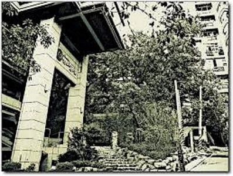
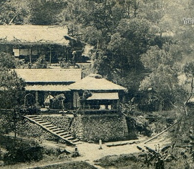
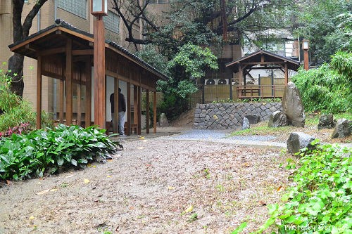
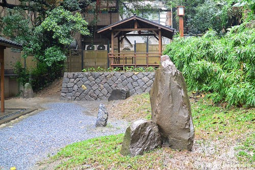
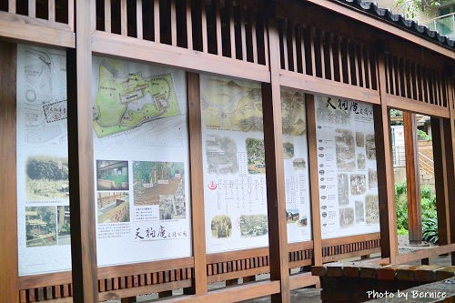

過去有學者將北投第一家溫泉旅館「天狗庵」誤認為現在的「瀧乃湯」，
導致錯誤的說法不斷以訛傳訛被媒體大量轉載，後來經由住在「天狗庵」隔壁
沂水園的陳老先生指正，

在訪談諸多北投年長人士後，並由陳老先生介紹，尋找聯絡到他北投小學校
的同窗，「天狗庵」創建者平田源吾的孫公子平田恆之先生，終於確定「天狗庵」
的舊址。

早期原先有人向市政府提出將天狗庵設成古蹟，但由於舊天狗庵只剩下一個
石階梯與兩根柱子，並不符合遺址的定義，所以最後並沒有被通過，後來又有人
提出將此地改為公園預定地，

這個提議後來獲發展局同意，所以此地被指定為公園用地並規劃為紀念公園，
但是天狗庵僅存的石階梯與兩根柱子，在過去省府黃姓退休人員搬遷出後，竟然
也在主事者不經意與不瞭解的情況下，與隔鄰的公有地一起拍賣給私人並計畫改建
為大樓，經過向承購者協商後對方才同意捐出一小部分以紀念北投溫泉的開發史。

於是台灣的第一家民營溫泉---「天狗庵」舊址，便以紀念公園的形式保存
下來了，讓我們在北投公園旁，就可以看到一片讓人感懷創業維艱的北投溫泉開發
紀念公園。
